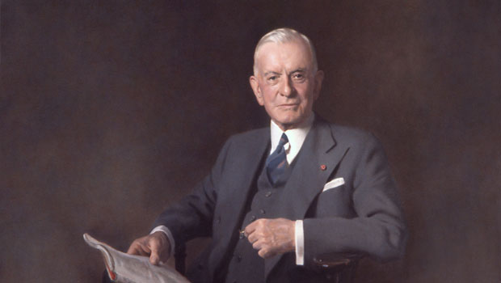

ThomasJ.Waston
Born: February 17, 1874
Died: June 19, 1956 (aged 82)
Thomas John Watson Sr. was an American businessman who served as the chairman and CEO of IBM.
Thomas J. Watson was born in Campbell, New York, the fifth child and only son of Thomas and Jane Fulton White Watson.
His father farmed and owned a modest lumber business located near Painted Post, a few miles west of Corning,
in the Southern Tier region of New York.
Thomas worked on the family farm in East Campbell, New York and attended the District School Number Five
in the late 1870s. Watson took a year's course in
accounting and business at the Miller School of Commerce in Elmira, New York.
He left the school in 1891, taking a job at $6 a week as
bookkeeper for Clarence Risley's Market in Painted Post.
One year later he joined a traveling salesman, George Cornwell, peddling organs
and pianos around the farms for William Bronson's local hardware store, Watson's first sales job.
He built a worldwide industry during his 42 years at IBM. Mr. Watson was born in Campbell, N.Y., February 17, 1874.
Thomas Waston is best known for developing telephone.In Waston life he has been awarded many times for the contrivution he had made
for the society.

Famous Quotes of Thomas J. Watson
- If you want to achieve excellence, you can get there today.
- Follow the path of the unsafe, independent thinker.
- To be successful, you have to have your heart in your business and your business in your heart.
- You can be discouraged by failure, or you can learn from it.
nofollow
Information source about Thomas J Waston
This is a link
Achievement of Waston
| Waston joined the sales staff of national cash register company |
1895 |
| Waston became president of the Computing Tabulationg Recording company |
1914 |
Changed company name to International Business Machine |
1924 |